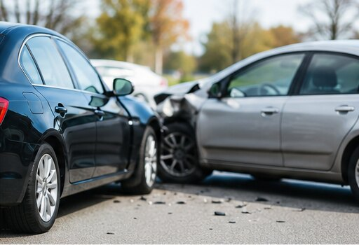
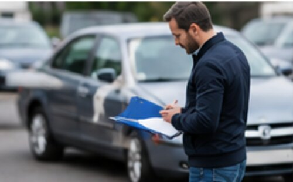

Trafik Kazaları & Trafik Hukuku Avukatı
Siz sağlığınıza odaklanın – gerisini biz üstleniyoruz. Sigorta, ekspertiz, süreler: Artık bizim işimiz.


Kaza mağdurları için Kaza mı geçirdiniz? Acil yardım & sigortayla tüm sürecin yürütülmesi – bundan sonrasını biz üstleniyoruz. Acil yardım al →
Oto bilirkişileri için Oto bilirkişisi misiniz? Gutachten hacminiz için güvenilir partner büro – hızlı işlem, sabit muhatap, adil ve uzun vadeli iş birliği. İş birliği talebi →Kimler için buradayız
Haklarınızı inceler ve sigortayla tüm süreci sizin adınıza yürütürüz.
Oto bilirkişisi misiniz? Büromuzla uzun vadeli iş birliğinden yararlanın.
Trafik Hukuku Detayda
Karşı tarafın trafik sigortasıyla eksiksiz kaza tasfiyesi – siz uğraşmadan.
Tüm manevi tazminat ve tazminat taleplerinizi kararlılıkla takip ederiz.
Onarım, değer kaybı, kullanım kaybı, kiralık araç, pert, hurda değeri ve bilirkişi ücretleri – doğru hesaplanır.
Sigortalar talepleri kısar veya reddederse haklarınızı savunuruz.
Para cezası, sürüş yasağı ve puanlara itiraz – her karar dikkatle incelenir.
Sürücü belgesinin geri alınması tehdidinde savunma.
3 Adımda
Trafik kazanızı kısaca anlatın – WhatsApp, e-posta veya telefonla. Yanıt genellikle 24 saat içinde.
Mevcut belge ve fotoğrafları bize gönderin. Haklarınızı inceler, gerekirse bağımsız bir bilirkişi görevlendiririz.
Karşı tarafın zorunlu trafik sigortasıyla tüm süreci yürütür ve haklarınızı savunuruz – sigortayla tartışmanıza gerek yok.
* Kusursuz bir trafik kazasında avukatlık ücretlerini genellikle karşı tarafın trafik sigortası karşılar. Değerler 16 yılı aşkın trafik hukuku deneyiminden gelmektedir.
Neden Serpil Şahin
„16 yılı aşkın süredir müvekkilleri trafik hukukunda temsil ediyorum. Hedefim: Kazadan sonra siz sağlığınıza odaklanın – sigortayla mücadeleyi ben üstlenirim.“
— Avukat Serpil Şahin
Konuşun ya da yazın – size nasıl uygunsa. Yanıt genellikle 24 saat içinde.
Sık Sorulan Sorular
Kusursuz bir trafik kazasında gerekli avukatlık ücretlerini kural olarak karşı tarafın zorunlu trafik sigortası üstlenir. Bunun için hukuki koruma sigortası gerekmez.
Hayır. Kusursuz kazada masrafları genellikle karşı tarafın sigortası karşılar. Kendi kusurunuzda hukuki koruma sigortası yardımcı olur – bunu önceden birlikte netleştiririz.
Evet. Kusursuz kazada karşı sigortanın değil, kendi bağımsız bilirkişinizi seçme hakkınız vardır.
Genellikle 24 saat içinde. En hızlısı WhatsApp ile bize ulaşmaktır.
Evet. Süreç dijital yürüdüğü için sizi Almanya genelinde temsil edebiliriz.
Hayır. Kusurunuz olmayan bir kazada kendi bağımsız bilirkişinizi görevlendirebilirsiniz – masraflarını kural olarak karşı tarafın sigortası öder. Sigorta ekspertizleri deneyimlere göre genellikle daha düşük çıkar.
Kusurunuz olmayan bir kazada kural olarak evet – onarım veya yeni araç temini süresince. Önemli: Kiralık araç aynı sınıf veya daha küçük olmalı. Alternatif olarak kullanım kaybı tazminatı talep edebilirsiniz – hangisinin daha avantajlı olduğunu birlikte değerlendiririz.
Pert durumunda aracınızın yeniden temin değerinden hurda değeri düşülerek ödeme yapılır. Ayrıca tescil masrafları, kullanım kaybı ve diğer kalemler eklenebilir. Önemli: Aracı sigortanın hurda alıcılarına aceleyle satmayın.
Aracınızı kaza nedeniyle kullanamıyor ve kiralık araç almıyorsanız, günlük tazminat hakkınız vardır – araç sınıfına göre çoğunlukla günde 23 ila 175 Euro arasında, onarım veya yeni araç temini süresince.
Usulüne uygun onarımdan sonra bile kazalı araç satışta daha az eder. Bu ticari değer kaybını, kusurunuz olmayan kazada karşı tarafın sigortası ödemek zorundadır – avukat devrede değilse bu kalem sıkça "unutulur".
Basit maddi hasarlar çoğunlukla 4–6 haftada sonuçlanır. Yaralanma veya kusur tartışmalı ise daha uzun sürebilir. Süre vererek sigortanın zamana oynamasını engelleriz.
Bu, yaralanmanın türüne ve ağırlığına, tedavi süresine ve sonuçlarına bağlıdır. Tazminat tabloları ve emsal kararlar yol gösterir. Sigortanın ilk teklifleri deneyimlere göre elde edilebilecek miktarın belirgin altındadır.
Derhal polisi arayın ve delilleri güvence altına alın (fotoğraf, tanık). Fail bulunamazsa belirli şartlarda Trafik Mağdurları Yardım Fonu (Verkehrsopferhilfe) devreye girebilir. Tüm yolları sizin için inceleriz.
Bu durumda da haklarınız vardır – süreç Yeşil Kart sistemi veya yabancı sigortanın Almanya'daki temsilcisi üzerinden yürür. Süreç daha karmaşıktır; avukat desteği özellikle değerlidir.
Leasingde aracın maliki leasing şirketidir – onarım ve değer kaybı talepleri kısmen ona aittir; kullanım kaybı ve manevi tazminat ise size. Talepleri leasing şirketiyle koordine ederiz.
Talep sahibi kural olarak işveren veya araç sahibidir. Sizin için manevi tazminat ve kazanç kaybı söz konusu olabilir. Tüm taraflar için hak durumunu netleştiririz.
Evet, tamirhaneyi siz seçersiniz. Alternatif olarak ekspertiz raporuna göre "farazi" hesaplaşma yapabilirsiniz – onarım yaptırmadan net onarım bedelini alırsınız. Hangisinin mantıklı olduğu duruma göre değişir.
Dikkat: Karşı sigortanın hızlı teklifleri ve "hasar yönetimi" öncelikle maliyeti düşürmeye yarar. Tüm haklarınız incelenmeden ibra/feragat belgesi imzalamayın.
İdari para cezası kararına yalnızca tebliğden itibaren iki hafta içinde itiraz edebilirsiniz. Bu yüzden kararı bize en kısa sürede iletin – ölçüm ve şekil hatalarını inceleriz.
Evet, kaza nedeniyle çalışamıyorsanız kazanç kaybınız karşılanmalıdır – ev işlerini yapamıyorsanız ev işleri zararı da dahil. Serbest çalışanlar mahrum kalınan kârı talep edebilir.
İlk yönlendirme ücretsiz ve bağlayıcı değildir. Dijital asistan genel soruları yanıtlar ve bireysel hukuki danışmanlığın yerini tutmaz.